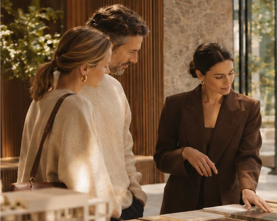

Understanding comes before strategy.
Before recommending change, we examine the experience customers receive today.
We bring an independent perspective to the relationship between your brand promise, customer experience and commercial priorities.
We look for what matters. Not simply what could change.
A closer look at the whole experience.
One business. Multiple perspectives. A clearer picture.

The brand promise
How consistently does the experience reflect what your business stands for?
The customer journey
Where do customers gain confidence, encounter friction or decide to proceed?
Different customer needs
How does the experience change across customer types and expectations?
The wider brand ecosystem
How is your business represented across its own channels, physical environments, partners and third-party platforms?
A considered approach. A practical outcome.
Independent findings. Practical recommendations.
Understand
Establish the brand promise, business priorities and intended outcomes.
Examine
Assess the journey across relevant touchpoints, customer types and experiences.
Prioritise
Identify the findings that matter most, considering commercial significance and feasibility.
Recommend
Develop a clear direction for the client's team or existing partners.
Findings that lead somewhere.
Our work connects customer observations with business priorities.
Where reliable information exists, we establish relevant baselines and agree how intended outcomes will be assessed.
Independent reviews can be commissioned at six or twelve months.
The right level of examination.
-
Customer Experience Audit & Strategy
Individually scopedA comprehensive engagement connecting customer experience, brand promise and commercial objectives.
DeliverableEvidence-based findings, priorities and a practical roadmap.
Discuss an engagement -
The Snapshot
$750 + GSTA focused assessment for businesses seeking an independent first perspective.
DeliverableOne-page diagnosis with up to four findings.
Request a Snapshot -
Additional specialist support
Support can be commissioned separately across implementation, service standards, team development and ongoing advisory.
The scope follows the business. Not the other way around.